# Author: Giorgio Luciano
# Title: boxplot fun
# Date: 16/2/2023
# Status: checked working
##---------------------------------------------------------------
# Step 1: Load libraries
library(ggplot2)
library(gridExtra)
library(data.table)
library(RColorBrewer)
library(ggpubr)
library(rstatix, warn.conflicts = FALSE)
library(ggrepel)
library(ggpubr)
library(patchwork)
# Step 2: Write a function for generating data with custom number of rows, means and sds
simpleDataset <- function(number_of_rows, means, sds)
{
l <- length( means )
res <- lapply(seq(1:l),function(x)
eval(parse(text=paste("rnorm(",number_of_rows,",",means[x],",",sds[x],")",sep = ""))))
dat <- data.frame((sapply(res,c)))
id <- rownames(dat)
dat <- cbind(id = id,dat)
dt <- data.table(dat)
return(dt)
}
dat1 <- simpleDataset(number_of_rows=100,
means = runif(10,100,150),
sds = runif(10,10,40))
outliers <- simpleDataset(number_of_rows=5,
means = runif(10,60,80),
sds = runif(10,10,10))
dato <-rbind(dat1,outliers)
dt.melt <- melt(dat1, id.vars="id")
colnames(dt.melt) <- c("id","category","var1")
dt.melt$ncat <- as.numeric(dt.melt$category)
#Step 3: Jiitter plots + boxplot + brackets
#setting up dimensions
options(repr.plot.width=8.9, repr.plot.height=8.9,units="cm")
#adding jiitter plot
p <- ggplot(dt.melt,aes(x=factor(ncat),y=var1)) +
geom_jitter(position = position_jitter(0.15),alpha=0.5,size = 3) +
geom_boxplot(alpha = 0,lwd=0.2)
##---------------------------------------------------------------Don’t trust boxplot
- categories: [r,ggplot,recipes]
So for now everything on track. We created a dataset using a custom function. 10 variables with 100 points each and them we plot them using scatter plots. Before plotting a few more data we need to answer the question
*How are boxplot constructed?* (*warning*: shameless self-promotion ahead) First of all you can check on my book/ebook [https://amzn.com/B08W8W5WSF](https://amzn.com/B08W8W5WSF)
Now it starts the fun part we will recreate a plot on the anatomy of a boxplot (see [here](https://www.sharpsightlabs.com/blog/ggplot-boxplot/)) using ggplot.
# we create a dataset and add a few outliers
#
y <- c(60,63,105,155,rnorm(100,80,25))
box <- ggplot() +
theme_void() +
geom_boxplot(aes(x=0,y=y),width=1,notch = FALSE,lwd=1) +
theme(legend.position = "none") +
lims( x = c(-2,2) )
#how can we get out data? using the function ggplot_build()
#need to change it to a data.frame and rename cols
box_data <- (ggplot_build(box)$data)[[1]]
box_data ymin lower middle upper ymax outliers notchupper notchlower x
1 16.81564 58.19611 75.04227 96.32843 130.8743 155 80.95017 69.13436 0
flipped_aes PANEL group ymin_final ymax_final xmin xmax xid newx new_width
1 FALSE 1 -1 16.81564 155 -0.5 0.5 1 0 1
weight colour fill size alpha shape linetype
1 1 grey20 white 1 NA 19 solidbdata <- data.frame(t(box_data[c(1,2,3,4,5,14)]))
colnames(bdata) <- c("y")
#we need to transpose the data and convert them to a data frame
#now we extract the ourliers
outl <- data.frame(box_data$outliers)
colnames(outl) <- c("outl")
#now that I got the data I plot everything with labels
p2 <- box + geom_text (data=bdata,aes(
x=1.5,
y=y,
label = c("min","Lower Q","Median","Upper Q","max","outliers")), size = 2)+
geom_segment(data = bdata, aes(x = 0.8, y = y, xend = 0.7, yend = y),lwd=1)
#since we have created the dataset WITH outliers we include labels also for them
#if your dataset has no outliers you need to commet this part out
p2 + geom_text_repel(data=outl,aes(x=0.1, y=outl,label=format(round(outl, 2), nsmall = 2)),size= 2) 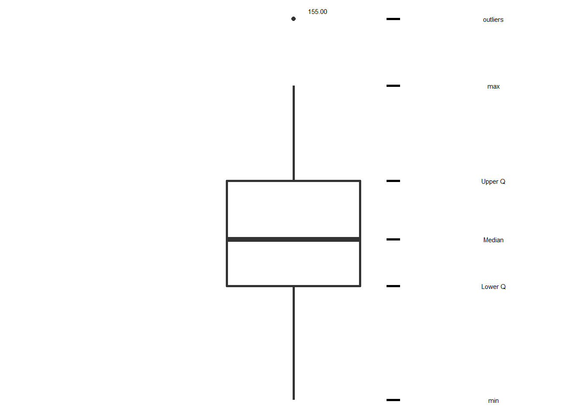
*notes on the code:* we create our variable `y` with `rnorm` and we add a few outliers by hand then we create the boxplot with an empty theme using `theme_void()`. The funny part start when we ask ggplot to show how the plot was built with the `ggplot_build`. We then need to rotate (`t`) the selected columns `c(1,2,3,4,5,14)` ,convert the results into a `data.frame`, rename the columns (`colnames`) and then use them (our `y`) to add labvels to our plot using `geom_text`
Another representation of boxplot can also include *notch*. the default is not to visualuize them but just adding `notch=true` to the previous plot we will do the trick
boxnotch <- ggplot() +
theme_void() +
geom_boxplot(aes(x=0,y=y),width=1,notch = TRUE,lwd=1) +
theme(legend.position = "none") +
lims(x=c(-2,4))
notchdata <- data.frame(t(box_data[c(7,8)]))
colnames(notchdata) <- c("y_notch")
#we need to transpose the data and convert them to a data frame
#now that I got the data I plot everything with labels
p3 <- boxnotch + geom_segment(data=notchdata, aes(x = 0.8,
y = mean(y_notch),
xend = 0.6, yend = y_notch
),lwd=1)
p4 <- p3 + annotate(geom="text", x=2.5, y= mean(notchdata$y_notch),
label="notch (95% confidence\ninterval of median)",size=4)
p4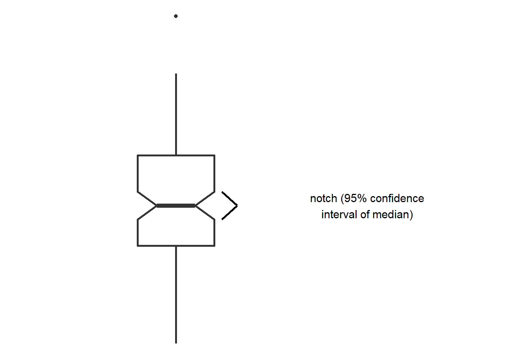
ok but what if multiple dataset have same statistics? Like in the case of the datasaurus package(Matejka and Fitzmaurice 2017)
library(datasauRus)Warning: package 'datasauRus' was built under R version 4.2.2summary(box_plots) left lines normal right
Min. :-9.76964 Min. :-9.769575 Min. :-9.76 Min. :-9.760
1st Qu.:-2.68999 1st Qu.:-2.689993 1st Qu.:-2.68 1st Qu.:-2.680
Median :-0.00999 Median :-0.007132 Median : 0.00 Median : 0.000
Mean :-1.17780 Mean :-0.831733 Mean : 0.00 Mean : 1.174
3rd Qu.: 2.67007 3rd Qu.: 2.670236 3rd Qu.: 2.68 3rd Qu.: 2.680
Max. : 9.75025 Max. : 9.756001 Max. : 9.76 Max. : 9.760
split
Min. :-9.769886
1st Qu.:-2.689989
Median :-0.003099
Mean :-0.003060
3rd Qu.: 2.680000
Max. : 9.760000 p1 <-ggplot(stack(box_plots), aes(x = ind, y = values)) +
geom_jitter(alpha=0.05) +
theme_void()
p2 <- ggplot(stack(box_plots), aes(x = ind, y = values))+
geom_boxplot(lwd=0.05) +
theme_void()
p1+p2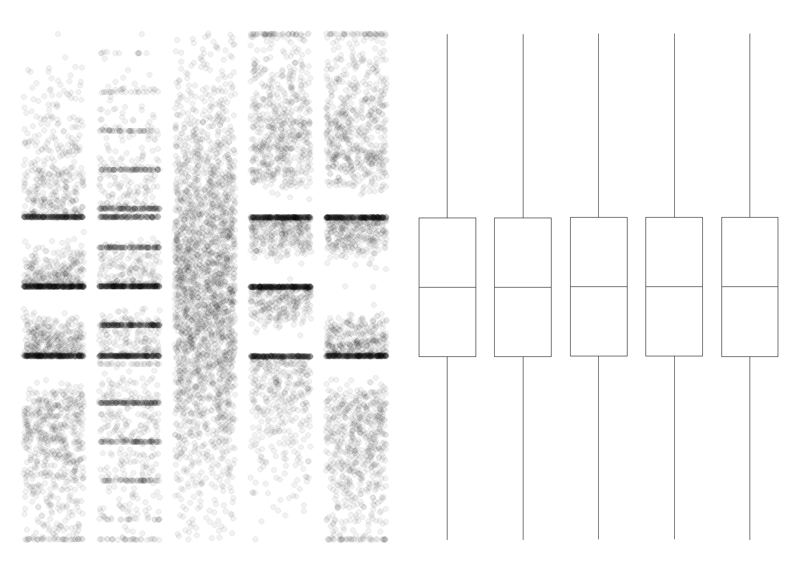
We can see that plotting the raw points even for hundreds of points works and represent well our data. In this case adding notch does not solve the problem. Other kind of plot get not fooled by our data as it can be seen in the following figure:
pnotch <- ggplot(stack(box_plots), aes(x = ind, y = values)) +
geom_boxplot(notch=TRUE) + ggtitle("(notch=TRUE)")
pjitter <-ggplot(stack(box_plots), aes(x = ind, y = values)) +
geom_jitter(alpha=0.05) + ggtitle("geom_jitter")
pviolin <- ggplot(stack(box_plots), aes(x = ind, y = values)) +
geom_violin(lwd=1) + ggtitle("geom_violin")
pnotch 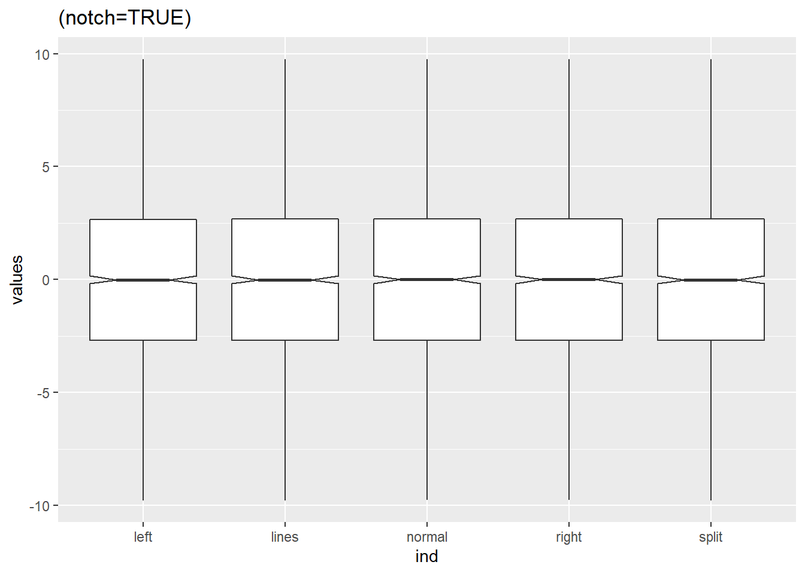
pjitter 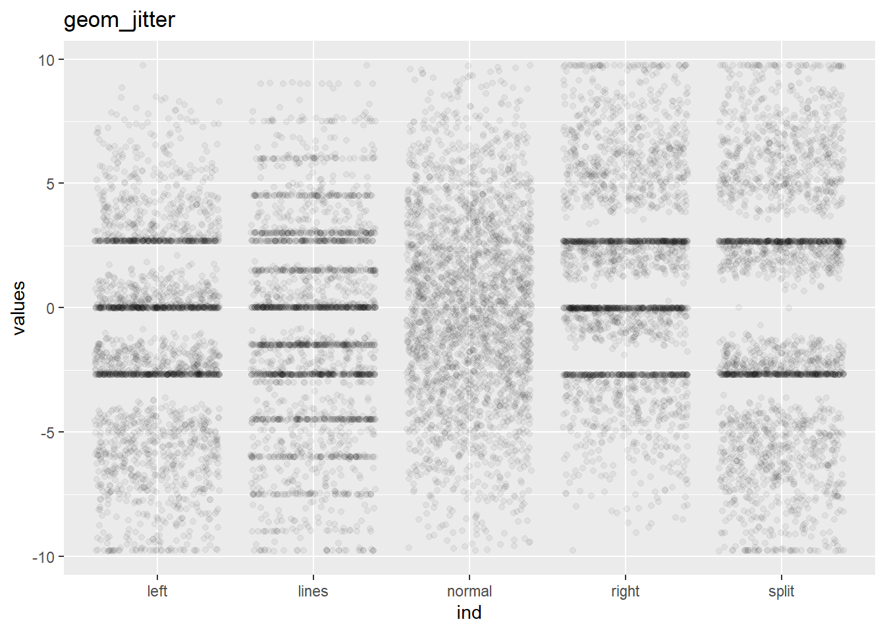
pviolin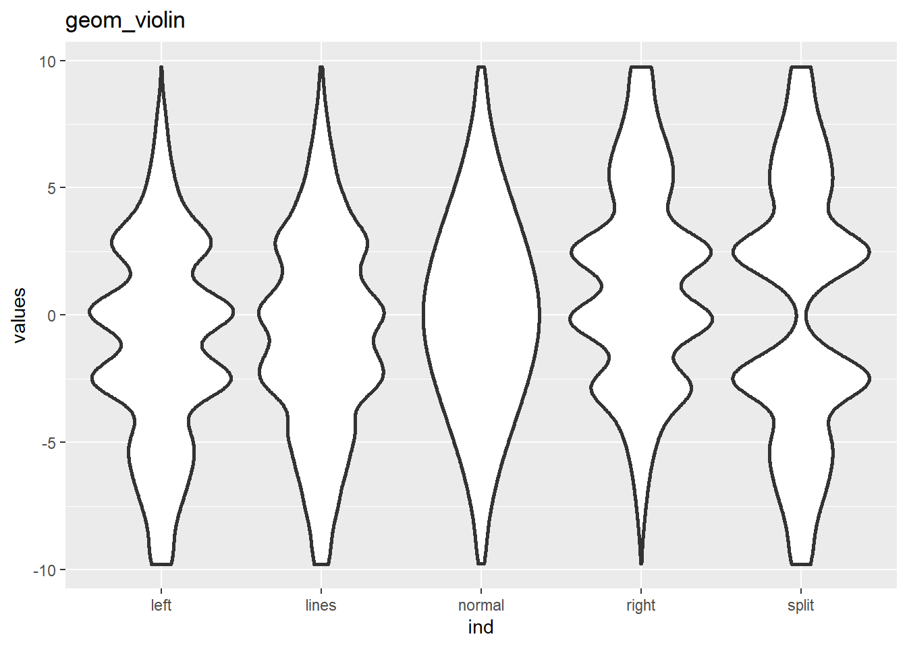
Other packages
1. beeswarm plot ggbeeswarm [https://github.com/eclarke/ggbeeswarm] (and here the things start getting artistic too!) (note: not all representation for this dataset work due to the number of points)
library(ggbeeswarm)Warning: package 'ggbeeswarm' was built under R version 4.2.2p_qrandom0 <- ggplot(stack(box_plots), aes(x = ind, y = values)) +
geom_quasirandom(alpha=0.05) + ggtitle("quasi_random")
#p_qrandom0
p_qrandom1 <- ggplot(stack(box_plots), aes(x = ind, y = values)) +
geom_quasirandom(alpha=0.05,method = "tukey") + ggtitle("Tukey")
#p_qrandom1
p_qrandom2 <- ggplot(stack(box_plots), aes(x = ind, y = values)) +
geom_quasirandom(alpha=0.05,method = "tukeyDense") + ggtitle("Tukey + density")
#p_qrandom2
p_qrandom3 <- ggplot(stack(box_plots), aes(x = ind, y = values)) +
geom_quasirandom(alpha=0.05,method = "tukeyDense") + ggtitle("Banded frowns")
#p_qrandom3
p_qrandom4 <- ggplot(stack(box_plots), aes(x = ind, y = values)) +
geom_quasirandom(alpha=0.05,method = "frowney") + ggtitle("Banded smiles")
#p_qrandom4
#too many points
#p_beeswarm <- ggplot(stack(box_plots), aes(x = ind, y = values)) +
#geom_beeswarm(alpha=0.05) + ggtitle("beeswarm")
p_qrandom0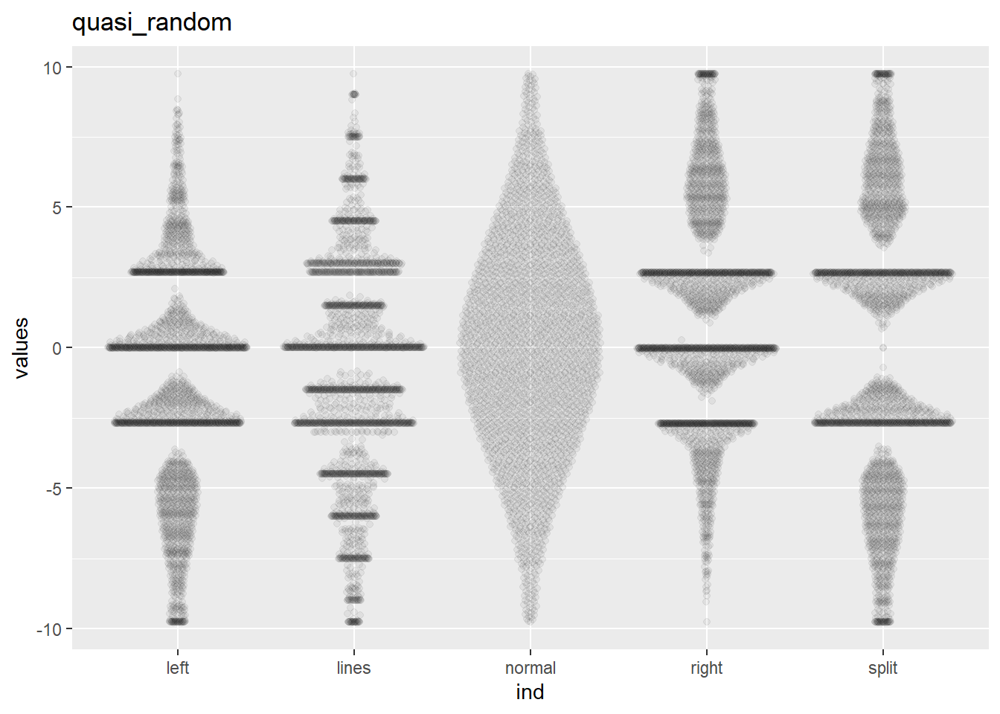
p_qrandom1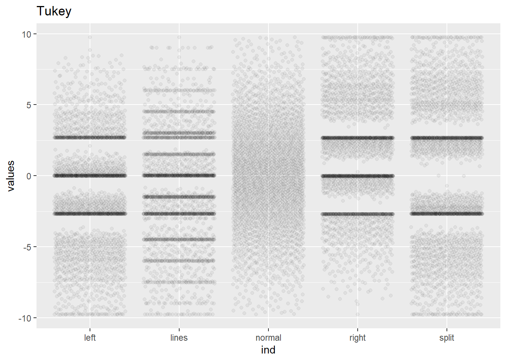
p_qrandom2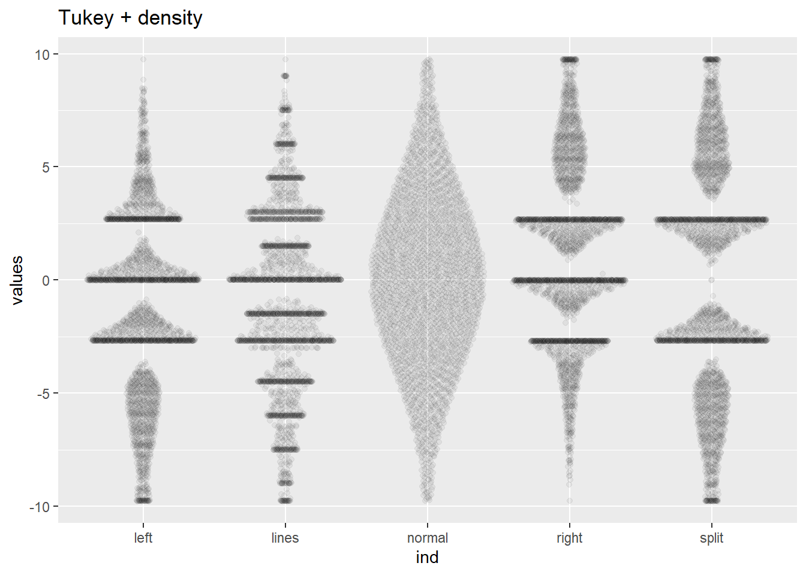
you can halso mix plot a useful package for that is gghalves
library(gghalves)Warning: package 'gghalves' was built under R version 4.2.2point_half <- ggplot(stack(box_plots), aes(x = ind, y = values)) +
geom_half_point(alpha=0.05)
geom_half_violin() geom_half_violin: side = l, nudge = 0, draw_quantiles = NULL, na.rm = FALSE
stat_half_ydensity: trim = TRUE, scale = area, na.rm = FALSE
position_dodge point_half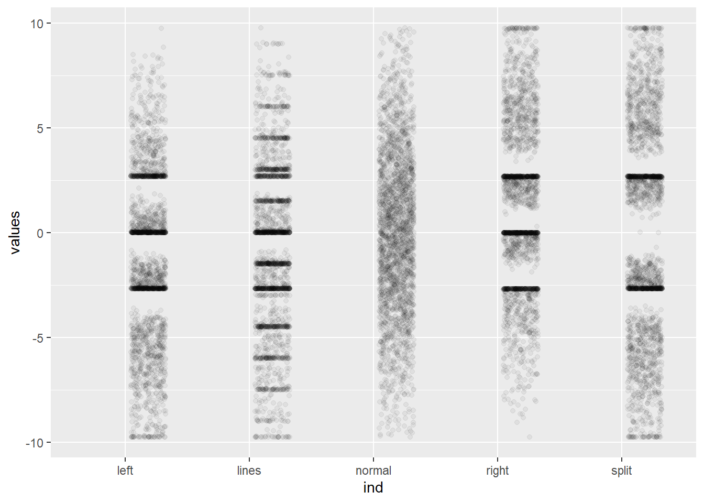
finally a very useful package, also my favorite one for EDA ggstatplotthat you can find here that calculate also a lot of useful stats and combine different kind of plot in one plot
library(ggstatsplot)You can cite this package as:
Patil, I. (2021). Visualizations with statistical details: The 'ggstatsplot' approach.
Journal of Open Source Software, 6(61), 3167, doi:10.21105/joss.03167
Attaching package: 'ggstatsplot'The following object is masked from 'package:data.table':
:=stackbox <- stack(box_plots)
pstack <- ggbetweenstats(
data = stackbox,
x = ind,
y = values,
)
pstack 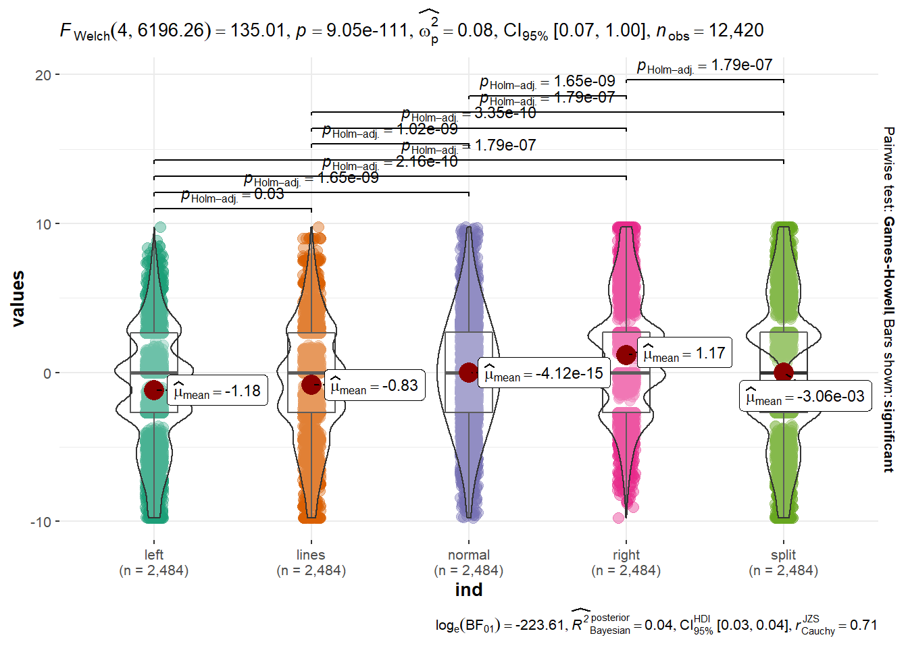
References
Matejka, Justin, and George Fitzmaurice. 2017. “Same Stats, Different Graphs.” Proceedings of the 2017 CHI Conference on Human Factors in Computing Systems, May. https://doi.org/10.1145/3025453.3025912.